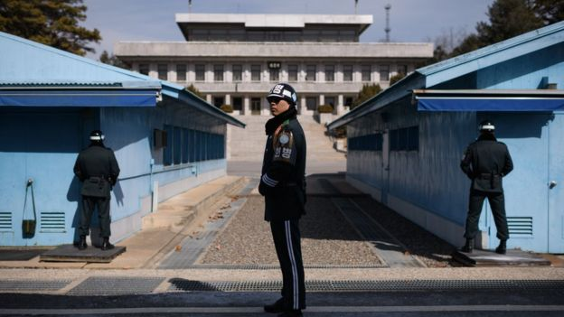
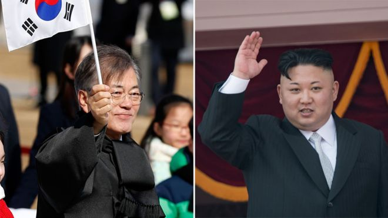
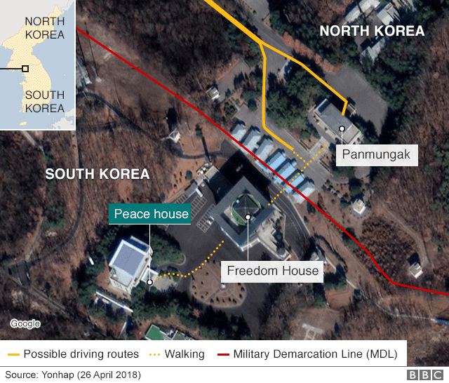

Kim Jong-un to meet Moon Jae-in at Korean border for Summit
Kim Jong-un is set to become the first North Korean leader to cross into South Korean territory since the end of the Korean War in 1953, as final details are put in place for the summit. South Korea said President Moon Jae-in would personally meet Mr Kim at the border at 09:30 (00:30 GMT) on Friday.
The historic summit will focus on the North's recent indications it could be willing to give up its nuclear weapons.
Talks are also proposed between Mr Kim and US President Trump by early June.
Mr Kim is set to cross the military demarcation line - a clearly defined marker of the official land border between the territories. He will, however, remain within the Demilitarised Zone.
Seoul has warned reaching an agreement aimed at ridding Pyongyang of its nuclear weapons will be "difficult", because North Korea's nuclear and missile technology has advanced so much since the sides' leaders last met more than a decade ago.
"The difficult part is at what level the two leaders will be able to reach an agreement regarding willingness to denuclearise," South Korean presidential spokesperson Im Jong-seok said.
The meeting - the third of its kind following summits in 2000 and 2007 - is the result of months of improving relations between the two Koreas, and paves the way for a planned meeting between Mr Kim and US President Donald Trump.
President Trump cast some doubt on that meeting on Thursday, saying in an interview with Fox News, "maybe the meeting doesn't even take place". He also said he was considering three or four dates as well as five possible locations, if it does go ahead.


Type Sizes
Mr Kim announced last week that he would suspend nuclear tests for the time being. The move was welcomed by the US and South Korea as a positive step, although Chinese researchers have indicated that North Korea's nuclear test site may be unusable after a rock collapse following its last test in September.
As well as addressing Pyongyang's nuclear ambitions, the leaders are expected to discuss a path to peace on the peninsula to formally end the 1950-53 Korean War, and a series of economic and social issues.
South Korea and the US say they are suspending annual military drills for a day while the summit takes place.
Every detail of the summit has been precisely planned - from the timetable to the dinner menu.
Mr Moon will meet Mr Kim and his delegation of nine officials at the concrete blocks which mark the demarcation line on the border, Mr Im told reporters on Thursday.
South Korean honour guards will then escort the leaders to a welcome ceremony at a plaza in Panmunjom, a military compound in the demilitarised zone (DMZ) between the two countries.
Official talks between Mr Moon and Mr Kim will begin at 10:30 local time (01:30 GMT) at the Peace House in Panmunjom.
The pair will break after the first session and will have lunch separately - with the delegation from the North crossing back to their side of the border.
At an afternoon ceremony, Mr Moon and Mr Kim will plant a pine tree using soil and water from both countries, to symbolise "peace and prosperity".
South Korean youths: "We're too busy for reunification"
A "petty" history of Korean relations
Following the tree planting, they will walk together before starting the next round of talks. The summit will conclude with the leaders signing an agreement and delivering a joint statement before dinner.
The banquet will be held on the South side - and a carefully planned menu has already been announced.

Who will attend
Mr Kim will be accompanied by nine officials, including his sister, Kim Yo-jong, who led the North's delegation to the Winter Olympics in South Korea earlier this year. Kim Yong-nam, North Korea's nominal head of state, will also attend.
In a rare move - one not seen at previous inter-Korean summits - the delegation will also feature top military officials and diplomats.
South Korean presidential spokesperson Mr Im said he was encouraged by this shift.
"I feel North Korea is sending their key military officials to the summit as they too, believe denuclearisation and peace are important," he said.
"North Korea appears to take into account not only the inter-Korean summit but also the subsequent North-US summit and efforts for international co-operation."
South Korea will send seven officials along with President Moon, including the ministers for defence, foreign affairs and unification. The chairman of South Korea's joint chiefs of staff was a late addition to his entourage.
The path to the summit
The summit is the high point after months of improving relations between the two countries, which few would have predicted following years of rising tension.
The rapprochement began in January when Mr Kim suggested he was "open to dialogue" with South Korea. The following month the two countries marched under one flag at the opening ceremony of the Winter Olympics.
Have the Winter Olympics repaired North-South Korea relations??
North Korea and South Korea set up hotline ahead of summit
Mr Kim's new appetite for diplomacy led to a meeting with senior South Korean officials in March - the first time officials from Seoul had met the young leader since he came to power in 2011 - to map out details for a meeting with Mr Moon.
Ahead of the summit, North Korean media praised Mr Kim for his work in the talks.
"It is a historic event for national history made possible by our brisk efforts for dialogue and peace," The Rodong Sinmun, official newspaper of the ruling Workers' Party, said in an editorial.
"Improving North-South relations is a necessary requirement for the achievement of homeland unification," it said.